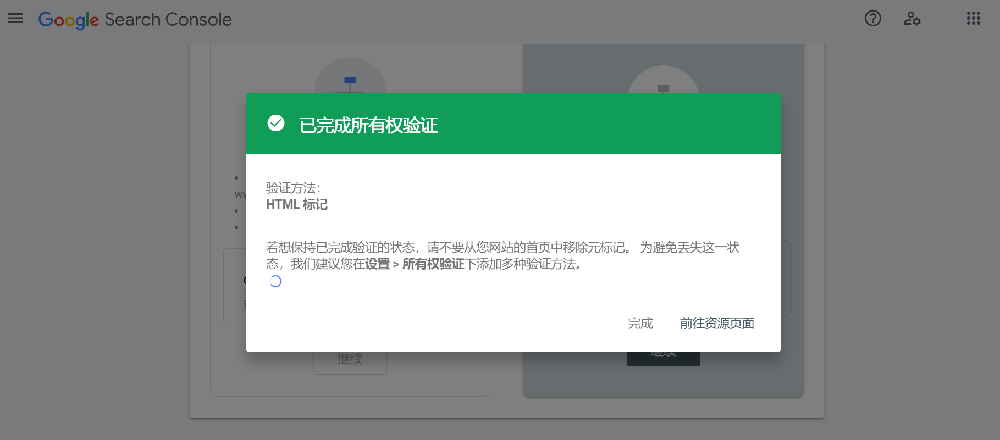

Hexo部署与配置-基于Butterfly主题【持续更新】
这篇博文作为总参考，感谢竹山一叶。
Hexo站点部署
本人太懒了，看客们不如…参考这篇文章？
网站配置
Front-matter
开启评论
听说推荐Twikoo，话不多说先上参考链接，留待以后搞。
网站美化
添加背景动效
DIY中，参考了竹山一叶的Hexo+Butterfly操作指南、美化方案和优化教程，以及花猪的Hexo魔改记录&感谢。
搭建图床
这个要快点搞…
其他
RSS源订阅
搜索引擎收录
平台验证
在html文件的head头中添加一行验证码，验证码从各平台search console获取。下图是谷歌的👇

必应完成索引编制很快，第二天就可以搜到了。

查了查百度的好像比较麻烦，暂时没有申请收录，so目前只在谷歌和必应平台做了验证。
添加站点地图
用于各平台（谷歌、必应、百度等）爬虫快速根据网站结构抓取网站关键字。
SEO进阶
还没实践，可参考这篇博文的SEO进阶部分。
添加搜索栏
等博文多了再慢慢搞吧。
网站加速
多平台托管，通过不同管线访问
本博客所有文章除特别声明外，均采用 CC BY-NC-SA 4.0 许可协议。转载请注明来源 云深不知处！
评论